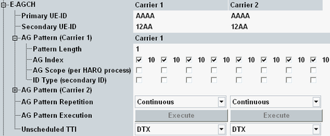

The following settings configure the absolute grant messages transmitted via the enhanced DCH absolute grant channel (E-AGCH).
An absolute grant defines the maximum amount of uplink (E-DCH) resources the UE can use (see 3GPP TS 25.321). It is signaled to the UE by the serving cell. Up to two UE identities, one primary and one secondary, can be allocated to a UE at a time.
To enable the E-AGCH, see "HSUPA Downlink Channels". To enable HSUPA, see "Connection Configuration".

Specify the primary and secondary E-DCH radio network temporary identifier (E-RNTI) of the UE.
In a scenario with dual uplink carrier, individual values can be set per carrier.
Option R&S CMW-KS401 is required.
Option R&S CMW-KS405 is also required for dual carrier HSPA.
Remote command:Configures the absolute grant pattern, i.e. the sequence of absolute grant messages to be sent to the UE. The signaling application steps through the table from left to right, using one column per TTI.
Each table column contains three parameter values: It defines an absolute grant index, the absolute grant scope and selects whether the message is addressed to the primary or to the secondary UE-ID.
In a scenario with dual uplink carrier, individual values can be set per carrier.
Option R&S CMW-KS401 is required.
Option R&S CMW-KS405 is also required for dual carrier HSPA.
Specifies the number of table columns to be considered (from left to right).
The maximum number of columns corresponds to the number of HARQ processes. For a 10 ms TTI, the maximum pattern length is 4. For a 2 ms TTI, the maximum length is 8.
Remote command:Specifies the absolute grant index. The UE maps the index to an absolute grant value, indicating the maximum E-DCH traffic to pilot ratio (E-DPDCH/DPCCH) that the UE is allowed to use in the next transmission.
Index 0 means INACTIVE, index 1 means ZERO_GRANT.
If a checkbox is disabled, an unscheduled TTI is used. Either DTX or a dummy absolute grant for another UE can be transmitted, see "Unscheduled TTI".
Remote command:The absolute grant scope defines whether the absolute grant applies to all HARQ processes (checkbox disabled) or to one HARQ process only (checkbox enabled).
Remote command:Specifies whether the absolute grant message is addressed to the primary UE-ID (checkbox disabled) or to the secondary UE-ID (checkbox enabled).
Remote command:By default, the configured absolute grant pattern is executed continuously. So when the end of the pattern is reached, it starts again with the first column.
With repetition "Once", the selected pattern is transmitted once whenever the "Execute" button is pressed. Before and after transmission of the pattern there are unscheduled TTIs.
With a pattern of length 1, repetition "Once" allows you to reset the E-TFCI of the UE to a definite value whenever needed.
The repetition "SG initialized" has meaning only in the context of E-RGCH measurements. It must be selected for correct configuration of the measurement algorithm.
In a scenario with dual uplink carrier, individual values can be set per carrier.
Option R&S CMW-KS401 is required.
Option R&S CMW-KS405 is also required for dual carrier HSPA.
Remote command:Triggers the execution of a single absolute grant pattern ("AG Pattern Repetition" = "Once"). The button is irrelevant for continuous patterns and is active during the active call.
In a scenario with dual uplink carrier, individual values can be set per carrier.
Option R&S CMW-KS401 is required.
Option R&S CMW-KS405 is also required for dual carrier HSPA.
Remote command:Defines the transmission in unscheduled TTIs per UL carrier. Unscheduled TTIs occur before and after pattern transmission with repetition "Once". A disabled AG index also results in an unscheduled TTI.
- "Transmit Dummy UEID": The E-AGCH power is maintained and the unscheduled TTIs contain a UE-ID which is different from the specified primary and secondary UE-IDs.
- "DTX": Discontinuous transmission is used during an unscheduled TTI, i.e. the output power is switched off.
Option R&S CMW-KS401 is required.
Remote command: